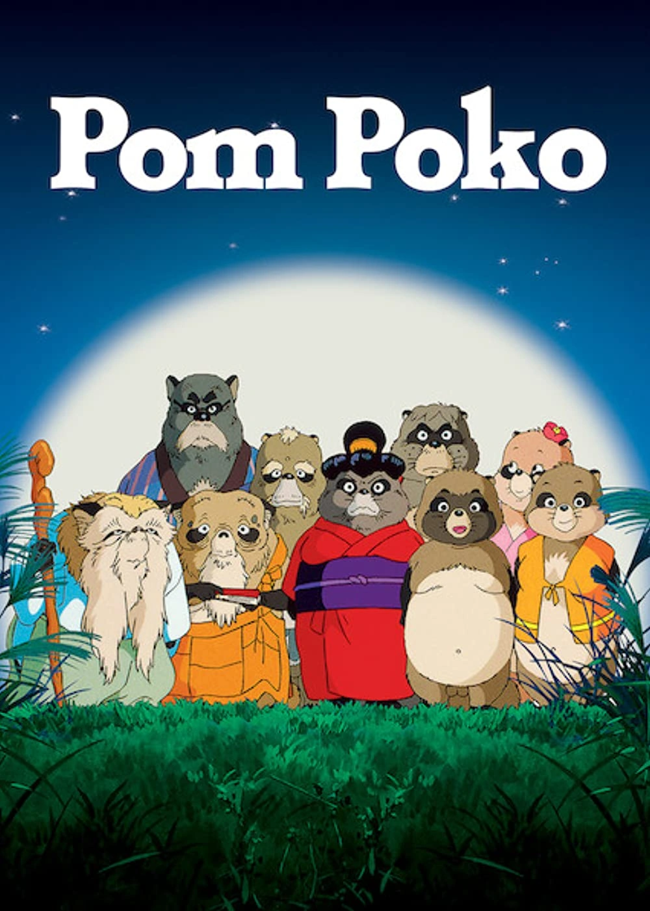

Pom Poko (Japanese: 平成狸合戦ぽんぽこ, Hepburn: Heisei Tanuki Gassen Ponpoko, lit. 'Heisei-era Raccoon Dog War Ponpoko') is a 1994 Japanese animated fantasy film written and directed by Isao Takahata, animated by Studio Ghibli for Tokuma Shoten, Nippon Television Network and Hakuhodo, and distributed by Toho.